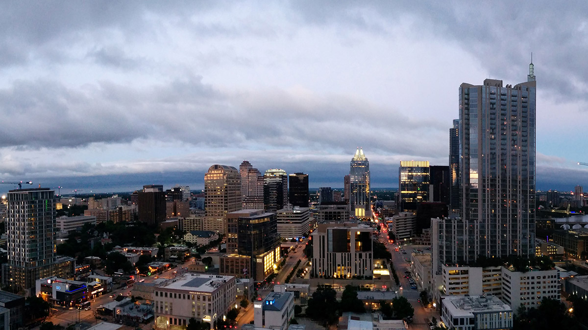

Amerika günlükleri: UT Austin'de ilk günler
January 24, 2013
University of Texas at Austin(UT)’de bahar yarıyılının ilk haftasını geride bıraktım. Hem şehir hem de üniversite hakkındaki ilk izlenimlerim oldukça olumlu. Ocak ayında olmamıza rağmen havalar genel olarak oldukça güzel, gündüz bahar havası geceleri ise zaman zaman epey soğuk olabiliyor. Austin’de insanlar oldukça rahat ve sevecen, ‘güney misafirperverliği’ ilk günlerden hemen hissediliyor.
Austin, İstanbul ve New York gibi büyük şehirlere kıyasla oldukça küçük ancak aradığınız her şeyi bulabildiğiniz bir şehir. Şehrin içinden geçen Colorado nehri, nehrin oluşturduğu göl ve etrafındaki koşu yolu da şehre güzellik katıyor.
Austin genel olarak düz bir alan üzerine kurulmuş bununla birlikte şehir merkezine yaklaşık 6 mil uzaklıkta bir dağ (Mount Bonnell) bulunuyor. Dikkatimi çeken bir başka nokta da trafiğin çok rahat olması, insanlar trafikte birbirlerine ve özellikle yayalara karşı çok saygılılar. Trafik şehir merkezi ve UT çevresi dışında fazla yoğun değil, trafik sıkışıklığı olduğu zamanlarda da insanlar agresifleşmeden sakin sürücü tutumunu sergilemeye devam ediyorlar, sanırım bu ABD’deki diğer şehirler için de geçerli.
UT öğrencileri şehir nüfusunda önemli bir yere sahip, sokaklarda gördüğüm insanların çoğu benim yaş aralığımda diyebilirim. Üniversite Teksas içinde önemli bir yer tutuyor, ayrıca ABD ve dünya genelindeki saygınlığı da oldukça yüksek. 2012 ARWU sıralamalarına göre mühendislik kategorisinde UT dünyada 5. Sırada. İlk izlenimlerime dayanarak üniversitenin bu sıralamayı hakettiğini söyleyebilirim. Hocalar hem sağlam akademik arkaplana sahip hem de pedagojik anlamda çok iyiler. Güzel ve geniş UT kampüsünden bahsetmeme bile gerek yok sanırım.
Şimdilik aklıma gelenler bunlar, fırsat buldukça yazmaya devam edeceğim. Bir sonraki yazımda görüşmek üzere. :)
Yurtdışı eğitim, Amerika